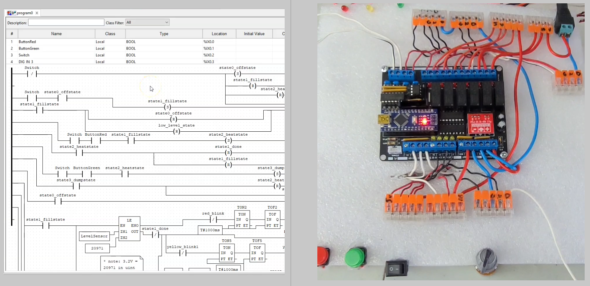
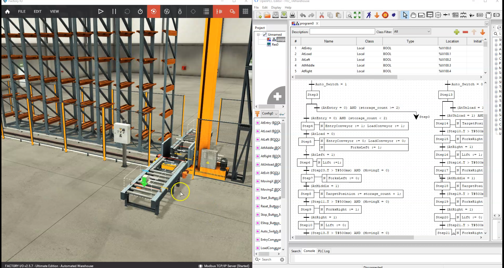
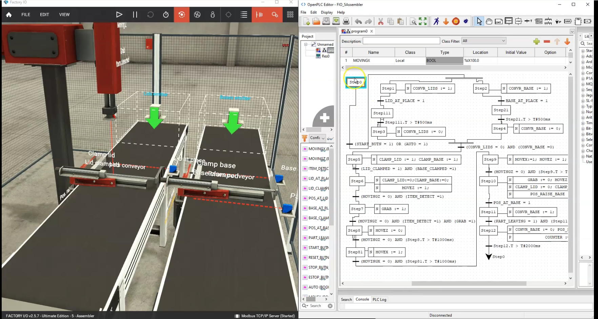
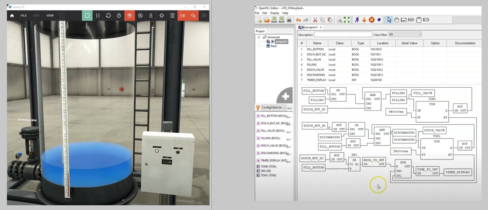
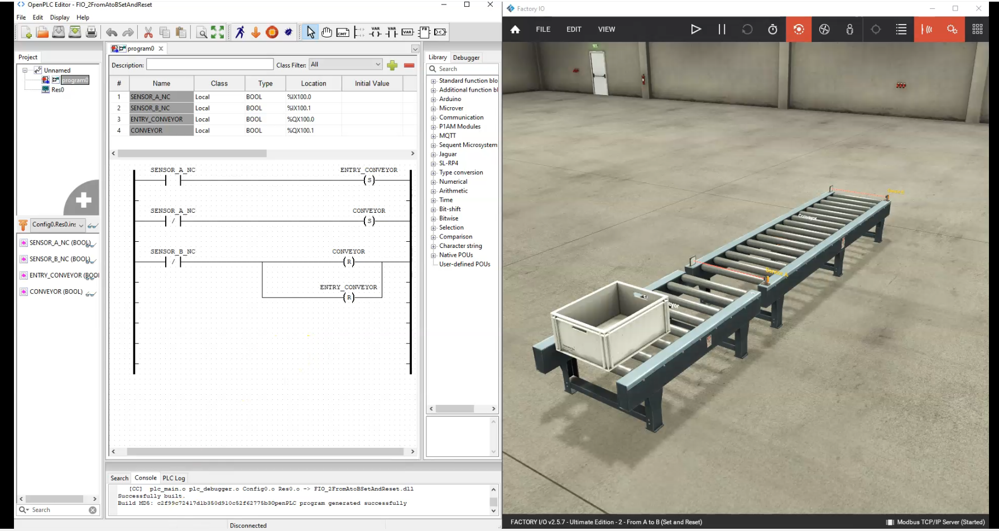
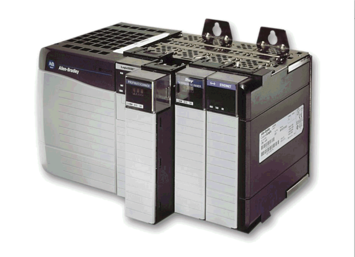

Featured
Let's see what I've experienced lately. [Click on the titles to see each article.]
{To see all my project experiences, go to the 'Archived' page.}
(NOTE: These articles are personal records of what projects I have attempted. These are not
articles to take directions from; instead, I have left references to those articles at the
end.)
Why I Did This
While scouting online for cheap physical PLC options, I found the Canaduino PLC 100 on Amazon.
It's a small board (about $30) that I had to solder myself and can
attach to an Arduino Nano. It contains ruggedized inputs and outputs at higher
voltages than what the Nano natively supplies, like
6 relay digital outputs with optoisolators; 4 digital inputs that can handle 3.3 - 24V; 4
analog inputs and 4 analog outputs that can both track in ranges between 0 - 10 V (very
similar to what many professional PLCs can do);
onboard LEDs for digital state notification; and 5V and 10V supply lines.
More importantly, it can be programmed with free Arduino IDE or the free OpenPLC editor and runtime.
In this video I showcase the board demonstrating its power with a makeshift 'water heater
and humidifer plant'.

Why I Did This
In previous articles, I've mentioned training and experiencing PLC development using OpenPLC
and FactoryIO.
In this demo, I using SFC to program FactoryIO's warehouse scene.

Why I Did This
In previous articles, I've mentioned training and experiencing PLC development using OpenPLC
and FactoryIO.
In this demo, I using SFC to program FactoryIO's pick and place scene.

Why I Did This
In previous articles, I've mentioned training and experiencing PLC development using OpenPLC
and FactoryIO.
In this demo, I using FBD to program FactoryIO's filling tank scene.

Why I Did This
I'm trying to develop my PLC automation skills as a possible career path, and I'm currently
a
student with a student budget.
PLC programming software can be expensive, and I wanted to find a way to expand my learning
of PLC programming (and utilize test projects) without breaking the bank.
OpenPLC is an open-source PLC programming software that can run on a Raspberry Pi, Arduino,
or just your own PC, and FactoryIO is a virtual plant software that can simulate a plant
environment (which you can get a free trial for 30 days).
Together, they can be used to learn PLC programming and simulate a plant environment for
free (for 30 days, then about $20/month for FactoryIO).
This is my demo of how to get these to work together using the Modus communication protocol
as a link.

Why I Did This
One of the possible careers paths I wanted to branch into was Automation. I had previous
history with industrial operations,
so using industrial automation controls (dubbed Operational Technology) and using PLC
(programmable logic controllers) systems;
but less familiar with the programming side of it (I only 'heard' of Ladder logic and
function block programming).
NAIT offered courses in PLC programming, and I wanted to learn more about it. I took the PLC
Ladder Logic Programming and PLC Advanced Programming courses
where I learned to program in the different IEC 61131-3 languages (Ladder Logic, Function
Block Diagram, Structured Text, Sequential Function Chart,
but not Instruction List as lots of companies consider it too archaic). I also learned to
program Allen Bradley CompactLogix PLCs using the RSLogix 500 and Studio 5000 software.

Why I Did This
I had an Android TV box that was previously used to turn my old TV into a smart TV (with
internet access and external hard drive access), but I had bought a cheap TV that had smart
capabilities, and this box was slow and always ran hot, so it was pretty much useless as is.
I wanted to see if I could test my electronics skills by repurposing this Android box with
something new. I found online that some people built a Linux distro specifically for these
ARM based systems, called Armbian (based on Debian), and, further, made a sub-distro for
these Android TV boxes, called RK3318 Box (the chipset that I have).
I was able to install the system quite easily following the tutorial, and it dramatically
reduced the temperature of the chip (before it was scalding hot), but I wanted to see if I
could then install a Lakka gaming OS firmware; but something went wrong with the install and
my box became totally unresponsive (bricked). I spent the next few days going over tutorials
and forums of people who have unbricked these before by using factory firmware tools (with
an unconventional USB A male to male cord), and grounding some of the board’s terminals, in
order to get the board into maskrom mode, in which then its able to be communicated with and
flashed with factory firmware. The factory firmware then allows a jumping point for which I
can then flash the system via USB sticks of preload firmware of custom Linux
software.
With a lot of patience, I finally got it to connect and flash, after which I pledged to not
attempt that Lakka install again, but instead try something else.

Why I Did This
I wanted to experience owning a solar storage system. I had the opportunity to receive
some
free 12V batteries, and I found a cheap basic maximum power point tracking (MPPT) solar
charge controller and 50W solar panel online.
The system totalled about $100. I also have a cheap 12V inverter (used in vehicles to
get a
120V AC supply).

Why I Did This
Hackathons are great place to: brainstorm project ideas; meet other innovators; get some
recognition and prize money. This hackathon was hosted at my university by the Alberta
Power
Industry Consortium, with the theme being centered around: Safety and Security for the
Smart
Grid, System Modelling and Artificial Intelligence for Power Systems, Grid Integration
of
Renewable and Distributed Energy, and Advanced Power Electronics for the Smart Grid. I
love
electrical-based projects so I figured this hackathon would be great for me.

Why I Did This
I had a cheap Raspberry Pi 3B and learned they were capable of hosting web servers. I was
learning more about web servers and figured this would be a good pi project; additionally, I
figured this project might teach me more about the intricacies of non-cloud web servers.
Cloud based web servers aren’t free (for the most part; you can get an exception to this by
using GitHub Pages, but apparently the level of service is limited); the costs arise from
the power and service time allocated from companies to have their computers serve the cloud
requests (think of it like charging for virtual parking and virtual valets of your website
or other internet services). To get around this (at least at the individual tinkerers’
level) you can host your own website on your own hardware.

Why I Did This
In one of my university’s courses, we learned about real-time embedded systems.
Real-time
operating systems are systems that strive to complete tasks within hard time limits;
these
can be both scheduled and interrupt triggered tasks. They are important systems
because not
only do they express high performance with their ability to respond, but they are
suitable
for mission or safety critical systems (like vehicle accident black boxes, aircraft
systems,
medical devices).
FreeRTOS is an example of a real-time operating system (it’s in the name). I learned
that
you could import the FreeRTOS library on the Arduino IDE, so I wanted to reflect on
the
concepts in learned in my course and how I could apply them to an Arduino
project.
The main concepts our course focused on were: multi-tasking/concurrency and
priorities;
queue containers; UART and SPI communications; device control (motors with
opto-isolator,
displays, buttons, leds); hardware interrupts and polling;

Why I Did This
Some of my engineering courses taught me about some fundamental concepts of software
engineering (through an object-oriented style using the Java language); In doing
this, I was
also guided on how to use Android Studio, a standard application for developing
Android
based apps using the Java language.
Here I will go over the application my team and I built called QR Hunter, an app for
translating any QR or bar codes you find with your smartphone camera.

Why I Did This
I had the opportunity to work with some fine people on the University of
Alberta’s
Augmented Reality app called “UAlberta AR”. The app showcases many engineering
course
concepts that students and teachers can use as an aid in visualizing/ experiencing
said
concepts. It was a great experience to develop my Unity skills but also develop team
collaborations skills especially with DevOp style git version control (we had our
project on
a git repo and used Unity’s Continuous Integration checker to check our updates
everything we made a
revision to
the app). We also followed a sprint team review style when setting project goals.

Why I Did This
One of my passions is with nature related automation (because I like growing food plants and
I love the idea of them being cared for through automation).
Normally I can achieve this with minimal equipment (like a bubbler alone), but I have an
Arduino, lots of sensors, and data logger shield; and, as an engineer,
I figured this would be a perfect project for testing all of this equipment.

Why I Did This
It was the project of one of my engineering courses where the focus was to learn some
Arduino electronics building
and to learn how to brainstorm and report projects (for imaginary customers). We were tasked
with building a wind
speed sensor (turbine) using a rotary encoder and Arduino, plus 2 additional sensors of our
choice. I was able to
build on my Fusion 360 3D modeling and printing skills by printing some wind blades and
housings. Finally, we had
to summarize our project into a report PDF.